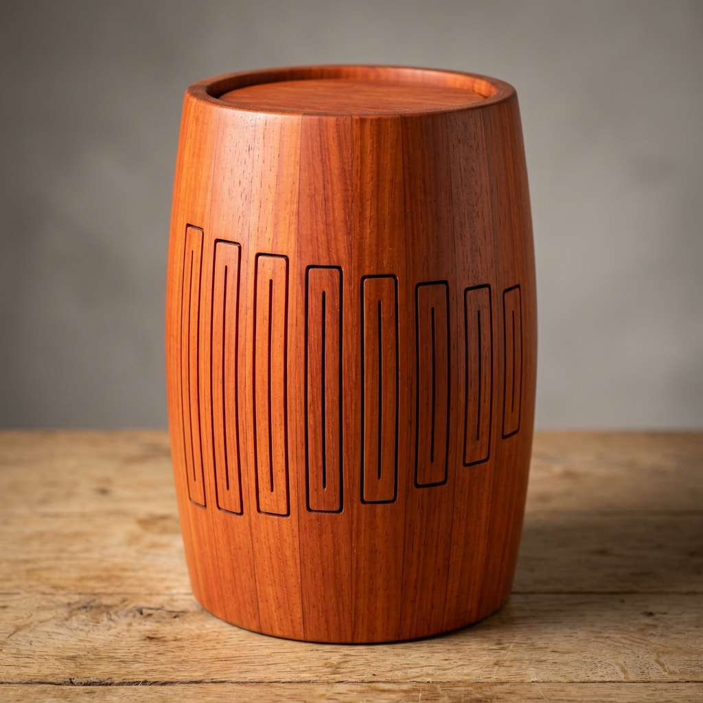
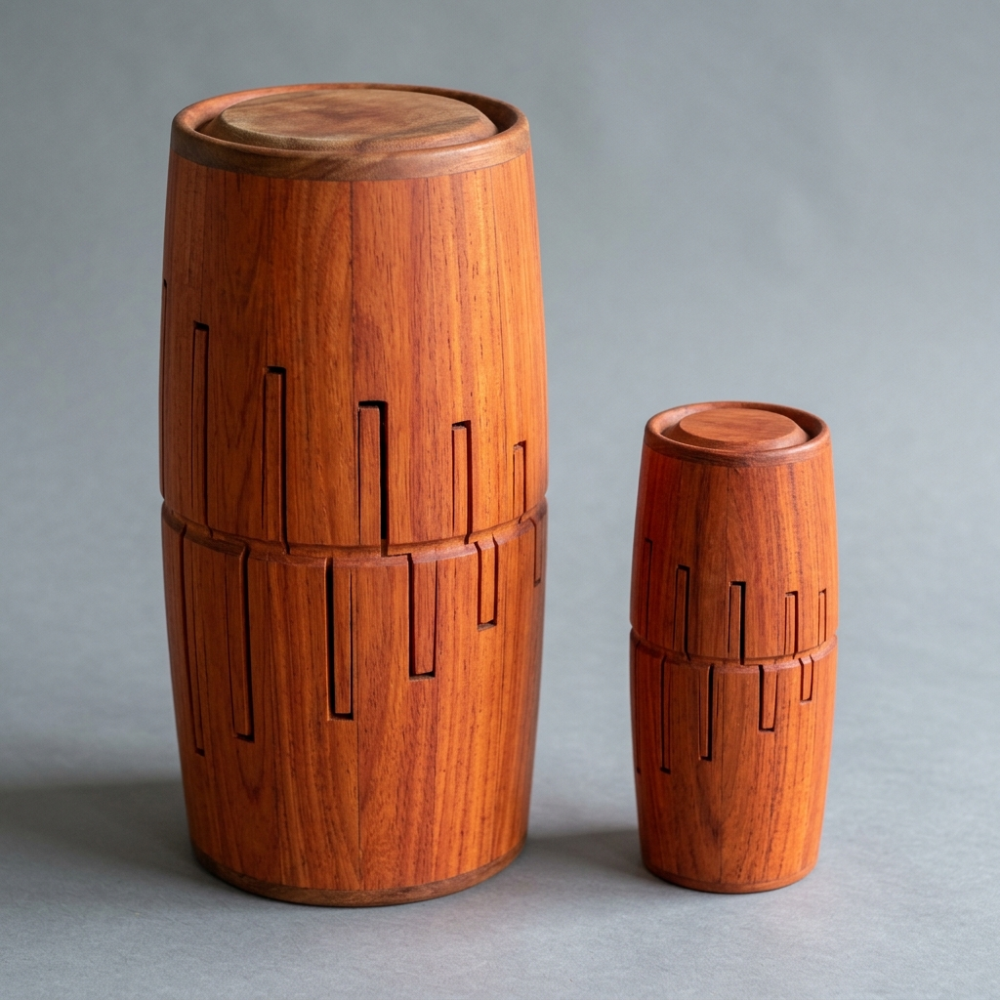
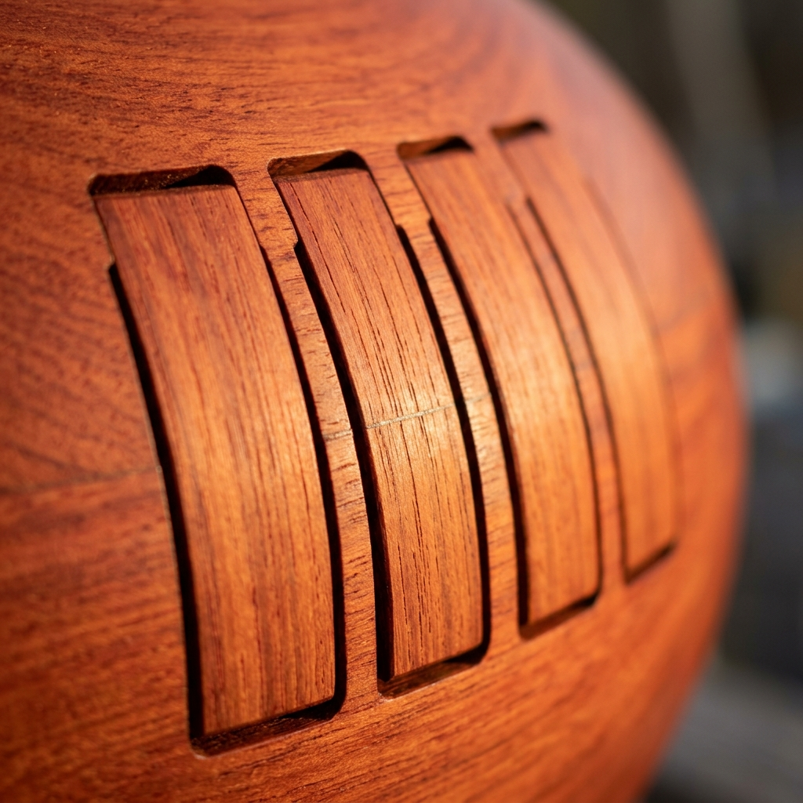

Readiness
V5 starter/build-packet candidate
Fabrication status
Not build-ready
Primary authority
Workbook and design-table starter values
Missing authority
Measured data, checked DXF, native CAD, shop CAM
Packet Summary
The duntong combines a cylindrical drum body with tuned wooden tongue-drum voices around the shell. The current packet preserves two workbook-derived prototype sizes and keeps the medium stave-cylinder as the V1 target.
Honest boundary The OpenSCAD file and SVG drawings are review artifacts. They help inspect the concept, but they do not replace checked CAD, DXF exports, measured templates, or prototype tuning data.
Variant Snapshot
| Variant | Size | Root | Construction | Authority posture |
|---|---|---|---|---|
| DNT-HANDHELD | 6 in OD x 9 in long | C5 | Split-blank or stave | Measurement required |
| DNT-MEDIUM | 12 in OD x 16 in long | C4 | Stave cylinder | V1 starter target, measurement required |
Authority Chain
| Artifact | Role | Status |
|---|---|---|
duntong-design-table.xlsx |
Workbook source for starter dimensions | Starter authority |
cad/design-table-inputs.csv |
Repo-readable design table | Starter authority |
cad/duntong_master.scad |
Parametric master-layout starter | Not production CAM |
drawings/*.svg |
Review previews | Not DXF fabrication authority |
validation.csv |
Prototype measurement gates | Pending measurements |
Open Gates
- Cut same-stock tongue coupons and measure pitch before shell cutting.
- Confirm Padauk or substitute material constant after stock selection.
- Measure curved-shell tongue shift and tune from long/flat rough cuts.
- Select sealed, ported, two-port, or drumhead end condition after tests.
- Create checked DXF/native CAD before laser, CNC, or router work.
- Validate V-block clearance, indexing, feeds, speeds, and hold-down at the actual machine.
Review Files
capstone-manifest.jsonvisual-output-register.csvcad/mcp-session-log.mdfamily-spec.csvcad/SolidWorks-MasterLayout-Plan.mdprint-packet.html
Images


